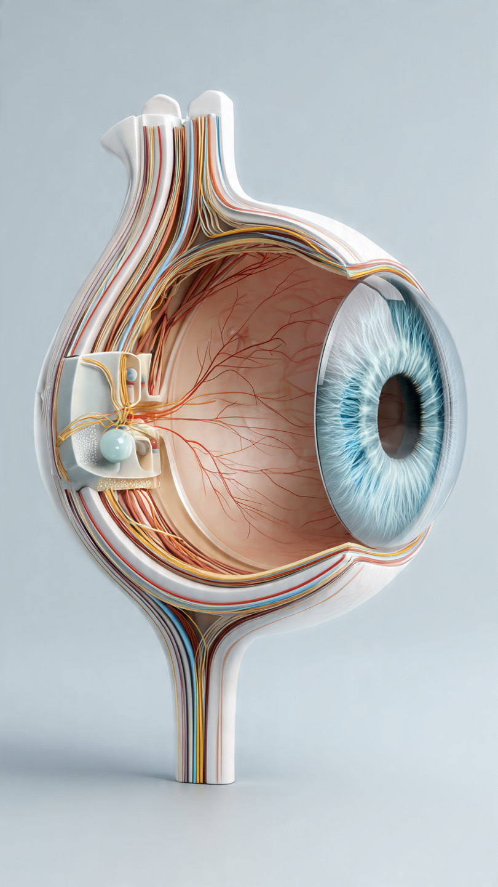

Как устроен глаз
Глаз собирает свет, а мозг превращает его в изображение окружающего мира.

Нажмите на любую часть глаза, чтобы узнать, как она работает.
Интересный факт
Изображение на сетчатке формируется перевёрнутым, а мозг воспринимает мир в привычном положении.
Что говорит наука
Свет проходит через несколько частей глаза, прежде чем превратиться в изображение.
Роговица и хрусталик помогают сфокусировать свет, а сетчатка содержит светочувствительные клетки, которые преобразуют его в нервные сигналы. Эти сигналы передаются по зрительному нерву в головной мозг, где формируется наше восприятие окружающего мира.
VISION использует информацию, основанную на современных научных исследованиях и рекомендациях специалистов. Материалы проекта предназначены для обучения и не заменяют консультацию врача-офтальмолога.
Проверь, что запомнил
1. Какая часть глаза первой преломляет свет?
2. Какая часть глаза регулирует количество света?
3. Какая часть передаёт сигналы от глаза в мозг?
Что тебя удивило больше всего?
Спасибо, что изучил эту тему. Надеемся, она помогла лучше понять, как работает зрение.